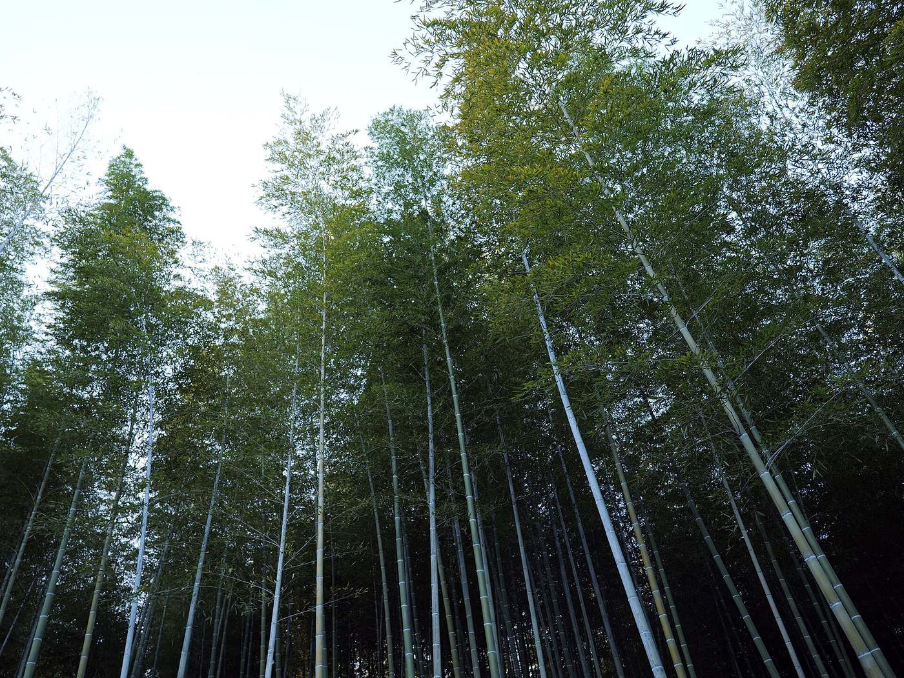

We make black
green carbon.
Industrial grade bio-coal manufactured with sustainable chemistry, using renewable and upcycled sources of raw material.
It cleans the water you drink, feeds the soil that grows your food, and fires the kilns that make steel and cement. Almost all of that carbon is dug out of the ground.
Three jobs, one material
Every use of industrial carbon comes back to one of these.
Purification
Removing what should not be there. Water, air, sugar, oil, precious metal, all cleaned by the same porous carbon.
Enrichment
Adding what soil is missing. Structure, water retention, and a home for the microbes that make land productive.
Combustion
Generating heat and power. Dense carbon fuel for the kilns and boilers that run heavy industry.
An industry most people never think about
Most of it is still mined
Over 40 percent of the world's activated carbon starts life as coal, pulled out of the ground and processed at real cost to the climate.
One feedstock, three outputs
Agricultural residue and other renewable biomass, carbonised and activated into products that already have a market. Nothing here needs to be invented, only replaced.

Soil & crop enhancement
Stable carbon that improves structure, holds water, and gives soil microbes somewhere to live. Field studies show roughly an 11 percent average lift in crop yield, with the biggest gains in exactly the degraded, tropical soils common across India.
Treatment & purification
Activated carbon for water, air, and process purification, the same role coal based carbon plays today, at a lower carbon cost to make.


Energy & power
Dense, high calorific carbon fuel for kilns and boilers, a direct substitute for the mined coal those furnaces run on today.